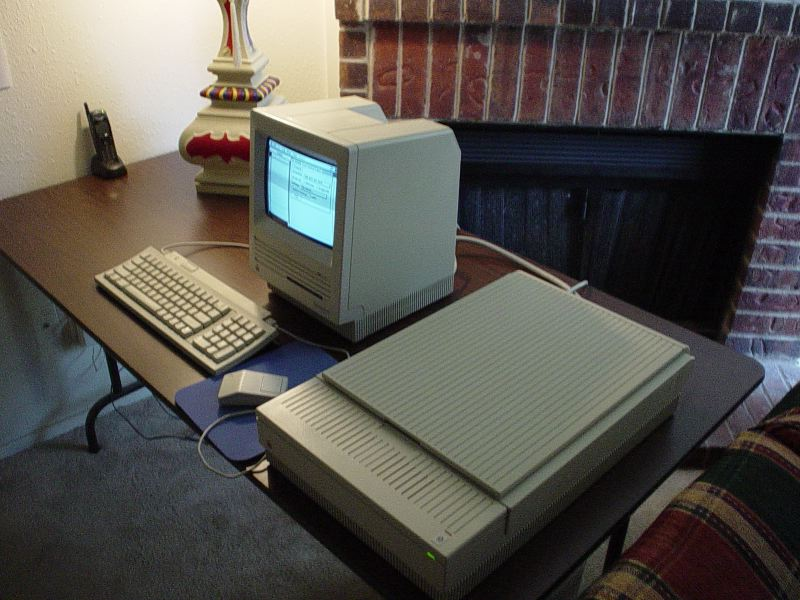
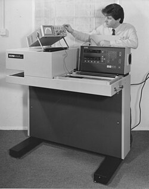
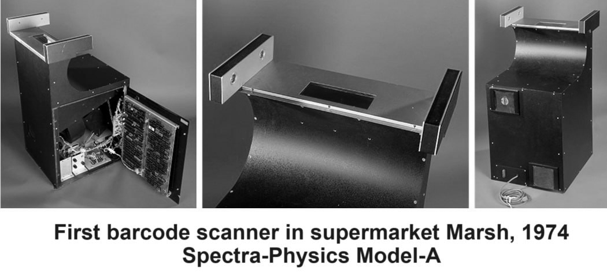
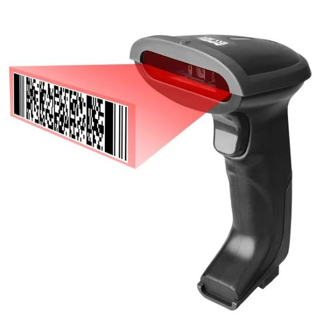
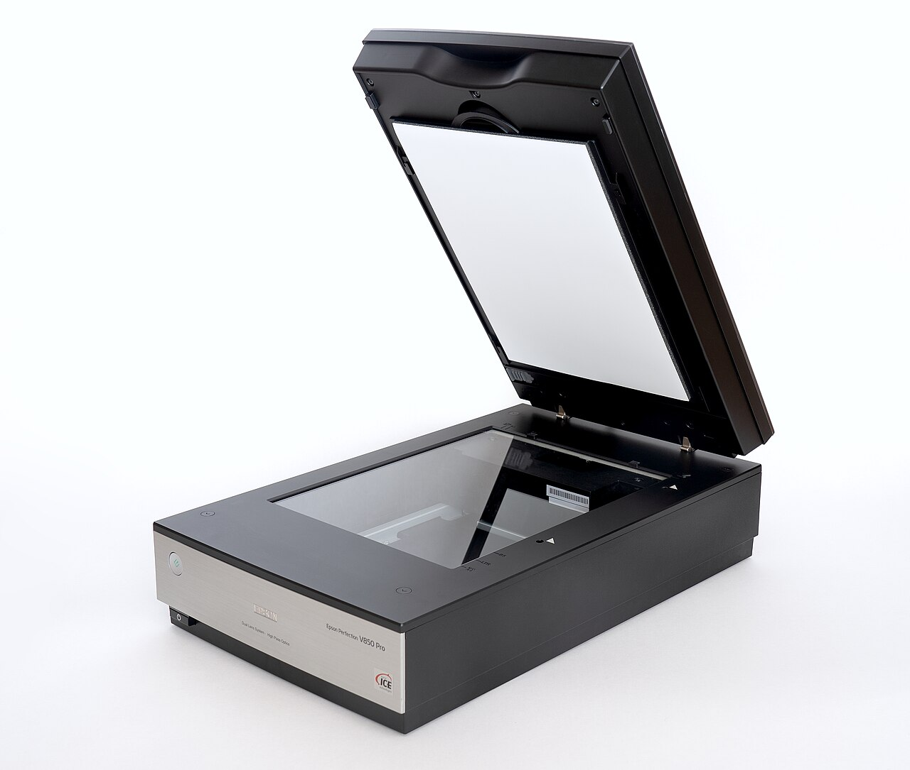

During the 1980s and 1990s, input technology expanded to translate physical objects, drawings, and continuous physical touches into digital data.

- Scanners and Barcode Readers (UPC)
- Barcodes in Retail: Introduced in 1974 with a pack of Wrigley's chewing gum, barcode scanners transformed data entry from manual price-typing to instant optical identification.
- Document Scanners & OCR: Enabled physical paperwork to be converted into digital raster images, paired with Optical Character Recognition to generate editable text files.
- Early Graphics Tablets and Resistive Touchscreens
- Digitizing Tablets: Used extensively in CAD (Computer-Aided Design) software, allowing architects and designers to trace physical sketches accurately.
- Resistive Touchscreens: Used in early ATMs, handheld PDAs (like the Palm Pilot), and industrial terminals, responding to physical pressure from a stylus or finger.
How did they look back then ?


How do they look like now ?


Sources
- Article by smithsonian. link to the article
- Article by WikiPedia. link to the article
- Article by computer history. link to the article